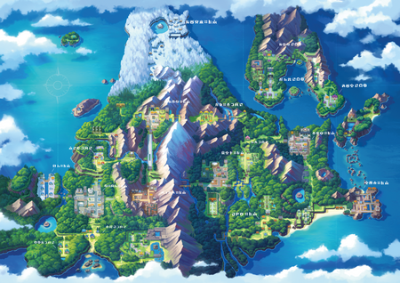
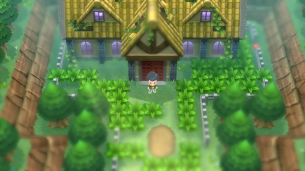
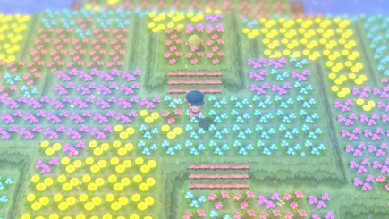
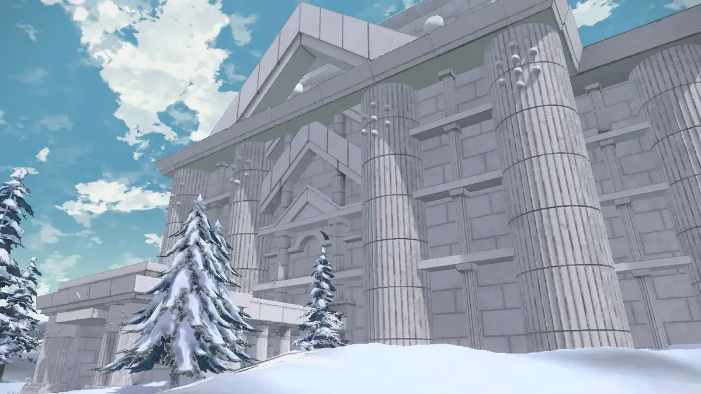
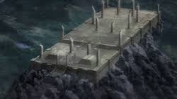

The sinnoh region is north of Kanto, Johto and hoenn.
It is based on real life northern island of Japan called hokkaido and the southern part of russian island of Sakhalin . Professor of this region is Professor Rowan who gives the player the
choice of The three starters near twinleaf town. The region is divided into two parts by a massive mountain range whose peak is mt coronet. There are
main three lakes in the region. the northern parts are covered with snow while both east and west have small little islands.

Old chateau is an abondoned mansion in the Eterna forest it is covered in dense fog which makes it hard to find. many ghost type Pokémon
live here along with mythical Pokémon rotom.


Flower paradise is a location in sinnoh north of route 224. it is a giant meadow covered in flowers. This
is where legandary Pokémon shaymin can be found.
Snowpoint temple is a temple that is located north of snowpoint city it is an ancient temple can is home to the legandary
Pokémon Regigigas entry inyto this temple is prohibited.


Spear pillar is the absolute peak of mount coronet the biggest mountain of the region. it is said that the entire region was created at
this point. this contains ruins of an ancient temple.